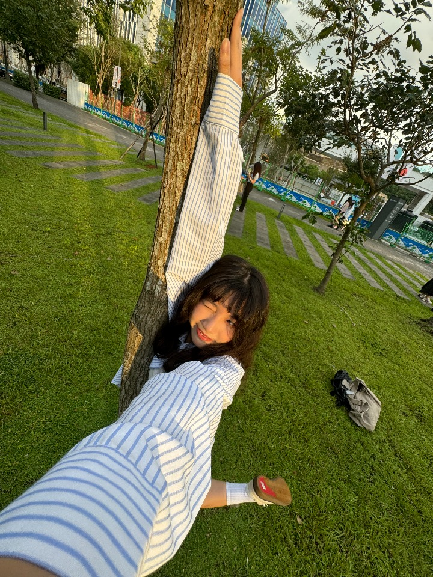
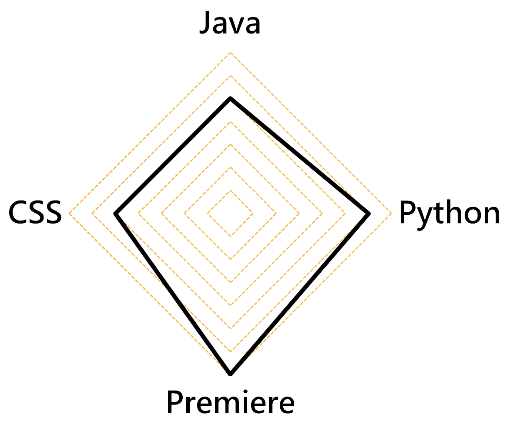

李沛宸 LEE,PEI-CHEN
中原大學資訊管理系Department of Information Management
"因為想成為你的明天，所以我活過了今天。"
中原大學資訊管理系Department of Information Management
"因為想成為你的明天，所以我活過了今天。"
關於我
專業能力
20241024熱舞社期初成發《Golden Hour》副總召
高中的成發因為疫情沒辦法舉辦，大學為了彌補遺憾我當了成發的副召，舉辦的過程中充滿挫折，但也讓我學習到臨場反應的重要還有事情要提前做好，也讓我清楚了解規劃一場演出的不容易，我以後去看表演時都會帶著敬佩的心情去欣賞。
管理學-青春動起來
透過這次的活動，我理解了不一樣的憨兒，一直以來我們都帶著有色眼鏡去定義憨兒能做的事，像是常見的手作餅乾或者是喜憨兒餐廳，有色眼鏡侷限了我們，也讓我們看清了「憨兒」，所以很感謝真善美福利基金會舉辦的活動，他們透過詳細的介紹摘下了我們的有色眼鏡，也讓我知道，只要不要侷限自己，其實能做的事比我們想像的更多，除此之外，洗車的活動是真的好玩但也很累，很開心那天的天氣很好，天空很漂亮，不會太熱也不會太冷，我們在分工合作的情況下總共洗了92台，可主辦單位也有說憨兒一天洗的車輛是我們的好幾倍，所以我覺得他們真的非常了不起～
社團活動
大學參加了熱舞社，第一次接觸Locking這種舞風，我覺得跳Locking讓我放鬆跟覺得有趣，我在大一上參加了期末小成《千禧狂歡夜》在那裏完成了進熱舞社的第一場表演，因為很喜歡跳舞的感覺，我大一下又繼續參加了期末大成《是星動呀》，挑戰了稍微比較進階一點的動作跟排舞，為我的大一增添充實的色彩。